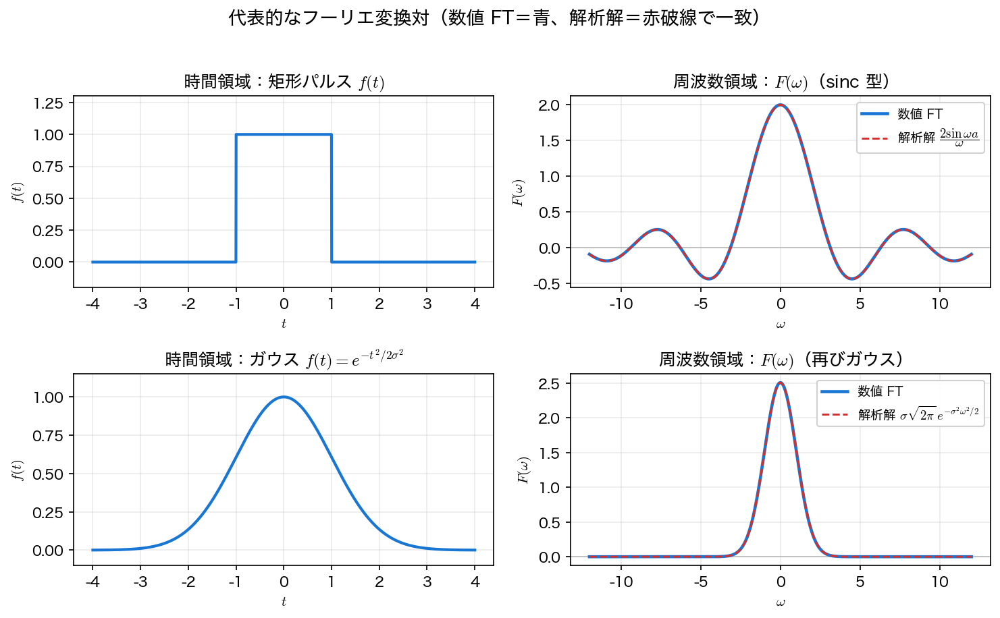

フーリエ変換
第2回のフーリエ級数は 周期 関数を対象としていた。本ページでは、周期 \(T\) を無限大に飛ばすことで 非周期 関数に拡張した フーリエ変換 を導入し、その定義・規約・基本性質・代表的な変換対を整理する。
フーリエ級数からフーリエ変換へ
周期 \(T\) の関数の複素フーリエ級数は、\(\omega_0=2\pi/T\)、\(\omega_n=n\omega_0\) として
であった。ここで \(F(\omega_n)\equiv T\,c_n=\displaystyle\int_{-T/2}^{T/2} f(x)\,e^{-i\omega_n x}\,dx\) とおくと、\(c_n=\frac{1}{T}F(\omega_n)=\frac{\omega_0}{2\pi}F(\omega_n)\) なので
周期を \(T\to\infty\) にすると、周波数間隔 \(\Delta\omega=\omega_0=2\pi/T\to 0\) となり、とびとびの \(\omega_n\) は 連続変数 \(\omega\) に、和は 積分 になる。こうして次の フーリエ変換対 を得る。
前者を フーリエ変換、後者を 逆フーリエ変換 と呼ぶ。\(F(\omega)\) は各周波数 \(\omega\) がどれだけ含まれるかを表す 連続スペクトル であり、一般に複素数（振幅 \(|F(\omega)|\) と位相 \(\arg F(\omega)\)）である。
この導出が保証すること・しないこと
上の \(T\to\infty\) は 形式的な導出 であって、任意の非周期関数について積分が収束することや、逆変換で元に戻ることを示したものではない。厳密には \(f\) の関数クラスごとに主張が変わる。
- \(f\in L^1\)（絶対可積分）なら \(F(\omega)\) は通常の積分として定義でき、連続で \(\lvert\omega\rvert\to\infty\) で \(0\) に近づく（Riemann–Lebesgue）。ただし \(F\) が \(L^1\) とは限らないので、逆変換の積分は収束するとは限らない。\(F\in L^1\) も仮定すれば、\(f\) の連続点で逆変換が元に戻る。
- \(f\in L^2\)（二乗可積分）なら、\(L^2\) の極限として変換が定義でき、後述の プランシュレルの定理 が成り立つ。これが本講義でエネルギーを論じるときの土俵である。
- 本ページの例（矩形パルス・ガウス・両側指数）はいずれも \(L^1\cap L^2\) に入るので、上のどちらの意味でも問題なく扱える。一方、\(\sin\omega_0 t\) や定数関数のようにどちらにも入らない信号は、超関数（デルタ関数）を使って初めて変換が書ける。
以下では、こうした収束条件が満たされている場合を前提に話を進める。
規約に注意
フーリエ変換の定義は分野により流儀が違う。主な違いは \(2\pi\) をどこに置くか と 角周波数 \(\omega\) か周波数 \(f\) か。 本講義は上の 角周波数・非対称規約（順変換に \(2\pi\) なし、逆変換に \(\frac{1}{2\pi}\)）を使う。一方、信号処理でよく使う 周波数規約 は
で、\(\omega=2\pi f\) で対応し \(2\pi\) が対称に消える。公式を引くときは必ず規約を確認すること。
基本性質
\(f(t)\leftrightarrow F(\omega)\)、\(g(t)\leftrightarrow G(\omega)\) とする。これらは積分の計算から直接導ける。
| 性質 | 時間領域 | 周波数領域 |
|---|---|---|
| 線形性 | \(\alpha f+\beta g\) | \(\alpha F+\beta G\) |
| 時間シフト | \(f(t-t_0)\) | \(e^{-i\omega t_0}F(\omega)\) |
| 周波数シフト（変調） | \(e^{i\omega_0 t}f(t)\) | \(F(\omega-\omega_0)\) |
| スケーリング | \(f(at)\ \ (a\neq0)\) | \(\dfrac{1}{\lvert a\rvert}F\!\left(\dfrac{\omega}{a}\right)\) |
| 微分 | \(f'(t)\) | \(i\omega F(\omega)\) |
| 畳み込み | \((f*g)(t)=\displaystyle\int f(\tau)g(t-\tau)d\tau\) | \(F(\omega)\,G(\omega)\) |
| 積 | \(f(t)\,g(t)\) | \(\dfrac{1}{2\pi}(F*G)(\omega)\) |
各行にも成立条件がある。スケーリングは \(a\neq0\)。微分則は \(f\) が微分可能で \(f'\) も変換でき、部分積分の境界項が消えること（\(\lvert t\rvert\to\infty\) で \(f\to0\)）が必要である。畳み込み則は例えば \(f,g\in L^1\) なら成り立ち、積の則は \(F*G\) の積分が存在することが要る。以下ではこれらが満たされている場合を扱う。
とくに重要なのが 畳み込み定理：時間領域の畳み込みは、周波数領域では 単なる積 になる。線形時不変システムの出力 \(y=x*h\)（\(h\) はインパルス応答）は、フーリエ変換すると \(Y(\omega)=X(\omega)H(\omega)\) となり、システムは各周波数成分を 周波数応答 \(H(\omega)\equiv\mathcal{F}[h]\) 倍する 掛け算に化ける ── これが「周波数で見ると見通しがよい」ことの核心である（ラプラス変換・伝達関数へつながる）。
スケーリングと不確定性関係
スケーリング則は「時間方向に 狭く すると周波数方向に 広がる」（逆も同様）ことを表す。これを定量化したのが 不確定性関係 である。ここで時間幅・周波数幅とは、\(\lvert f\rvert^2\) と \(\lvert F\rvert^2\) をそれぞれ確率密度とみなしたときの 標準偏差
のことである（\(\bar t,\bar\omega\) は同じ重みでの平均）。\(f\in L^2\) でこれらの2次モーメントが有限なら、厳密に
が成り立ち、等号は \(f\) がガウス関数のときに限る。短いパルスほど広い帯域を占める、という信号処理の基本事実でもある。第9回の短時間フーリエ変換では、この下限が「時間分解能と周波数分解能は同時には上げられない」という形で効いてくる。
パーセバル（プランシュレル）の定理
第2回のパーセバルの等式は、フーリエ変換では次の形になる（\(f\in L^2\) での主張であり、プランシュレルの定理 とも呼ばれる）。
左辺は信号の 全エネルギー、右辺は周波数成分のエネルギーの総和であり、「時間領域で測っても周波数領域で測ってもエネルギーは等しい」ことを述べる。\(\lvert F(\omega)\rvert^2\) を エネルギースペクトル密度 と呼ぶ。
代表的な変換対
| \(f(t)\) | \(F(\omega)\) | 備考 |
|---|---|---|
| 矩形パルス \(\;1\,(\lvert t\rvert<a),\;0\,(\text{otherwise})\) | \(\dfrac{2\sin\omega a}{\omega}\) | sinc 型。時間で有限 → 周波数で無限に広がる |
| ガウス \(\;e^{-t^2/2\sigma^2}\) | \(\sigma\sqrt{2\pi}\,e^{-\sigma^2\omega^2/2}\) | ガウスのまま。不確定性の下限 |
| 両側指数 \(\;e^{-a\lvert t\rvert}\;(a>0)\) | \(\dfrac{2a}{a^2+\omega^2}\) | ローレンツ型 |
代表的な2つの変換対を、数値積分したフーリエ変換と解析解で確かめる。
矩形パルスの変換（手計算）
幅 \(2a\)・高さ \(1\) の矩形パルスは、定義に代入して直接計算できる。
\(\omega\to 0\) では \(F(0)=2a\)（＝パルスの面積）。零点は \(\omega a=k\pi\)、ただし \(k\) は \(0\) を除く整数 である（\(k=0\) は \(\sin\) と \(\omega\) が同時に \(0\) になる可除特異点で、そこでは \(F(0)=2a\neq0\)）。したがって最初の零点は \(\omega=\pi/a\) にあり、時間で局在した（\(a\) が小さい）パルスほど周波数では広がる。
Python で数値的に確かめる
連続フーリエ変換 \(F(\omega)=\int f(t)e^{-i\omega t}dt\) を、細かい時間格子上の 台形則 で近似する。
import numpy as np
def numerical_ft(f, t, omega):
"""時間格子 t 上の f を各 ω について数値積分して F(ω) を返す"""
return np.array([np.trapz(f * np.exp(-1j * w * t), t) for w in omega])
t = np.linspace(-50, 50, 2_000_001) # 十分広く・細かく
omega = np.array([0.0, 1.0, np.pi])
# 矩形パルス（a=1）
rect = (np.abs(t) < 1.0).astype(float)
F = numerical_ft(rect, t, omega).real
for w, fw in zip(omega, F):
print(f"ω={w:5.3f}: 数値 {fw:+.5f} 解析 {2*np.sin(w)/w if w else 2:+.5f}")
数値積分の結果が解析解 \(2\sin\omega/\omega\) と一致する（\(F(0)=2\)、\(F(\pi)\approx 0\) も零点と整合）。ガウス \(e^{-t^2/2}\) についても同様に \(F(\omega)=\sqrt{2\pi}\,e^{-\omega^2/2}\) が再現される（\(F(0)=\sqrt{2\pi}\approx 2.5066\)）。

まとめ
- 周期 \(T\to\infty\) の極限で、フーリエ級数（離散スペクトル）は フーリエ変換（連続スペクトル \(F(\omega)\)）になる。
- 変換・逆変換は \(F(\omega)=\int f e^{-i\omega t}dt\)、\(f(t)=\frac{1}{2\pi}\int F e^{i\omega t}d\omega\)。規約（\(2\pi\) の位置・\(\omega\) か \(f\) か） に注意。
- 基本性質のうち 畳み込み定理（時間の畳み込み＝周波数の積）が最重要。パーセバル はエネルギー保存を表す。
- 矩形パルス↔sinc、ガウス↔ガウス。時間で局在 → 周波数で広がる（不確定性関係）。
次は、これを計算機で扱うための 標本化と FFT に進む。